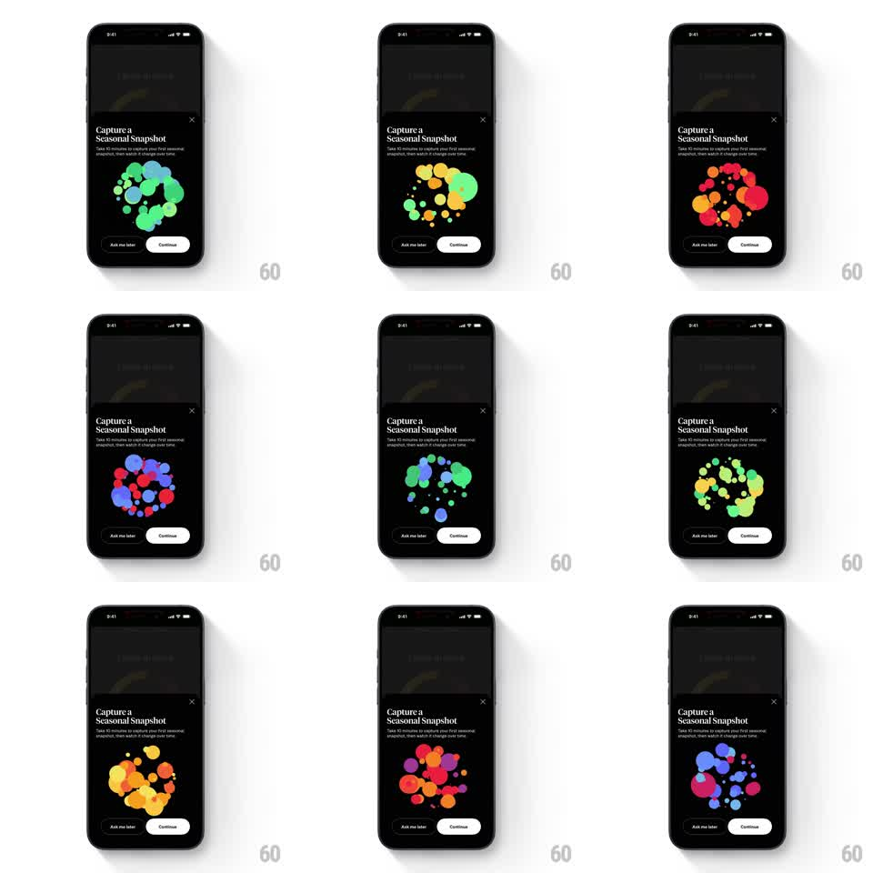

Media
Frame-by-frame

Rebuild this animation 1:1: How We Feel's seasonal-snapshot onboarding sheet - a loose cluster of colorful organic blobs loops through seasonal palettes (spring greens, summer yellows, autumn reds/oranges, winter blues) while scaling and drifting inside the "Capture a Seasonal Snapshot" bottom sheet.

Rebuild this animation 1:1: How We Feel's seasonal-snapshot onboarding sheet - a loose cluster of colorful organic blobs loops through seasonal palettes (spring greens, summer yellows, autumn reds/oranges, winter blues) while scaling and drifting inside the "Capture a Seasonal Snapshot" bottom sheet. ## Integration Integration: stack-agnostic spec - springs given as stiffness/damping, timed motions as duration + curve; map every value to your framework and animation library of choice. ## Scene Dark dimmed screen with a rounded bottom sheet: "Capture a Seasonal Snapshot" headline, subcopy about taking 10 minutes to capture a first seasonal snapshot, a close (x) top-right of the sheet, "Ask me later" outlined button and "Continue" filled button. Centerpiece: a ring/cluster of ~15 soft-edged blobs of varying sizes. ## Motion spec Pattern: looping organic blob cluster with palette cycling, indefinite. - Drift: each blob wanders on a slow independent path (10-30px, 3-6s periods), blobs occasionally overlapping with soft multiply blending. - Scale: blobs breathe on staggered phases (scale 0.85 -> 1.1, 2-4s each). - Palette cycle: every ~2.5s the whole cluster cross-fades its hues to the next season (green -> yellow -> red/orange -> blue/purple -> pink), ~1s hue transition, blobs keeping positions. - Formation: the cluster loosely holds a ring/donut silhouette, gently rotating (~8s per revolution). ## Calibration - Blobs are soft and organic - no hard circles with crisp edges. - Palette transitions must be simultaneous across the cluster; staggered hue shifts look like a bug. ## Reduced motion Static cluster in the spring palette; no drift, scale, or palette cycling. ## Don't miss - The sheet UI is static; all motion lives in the blob cluster. - The cluster never touches the headline or buttons - it owns the middle band.